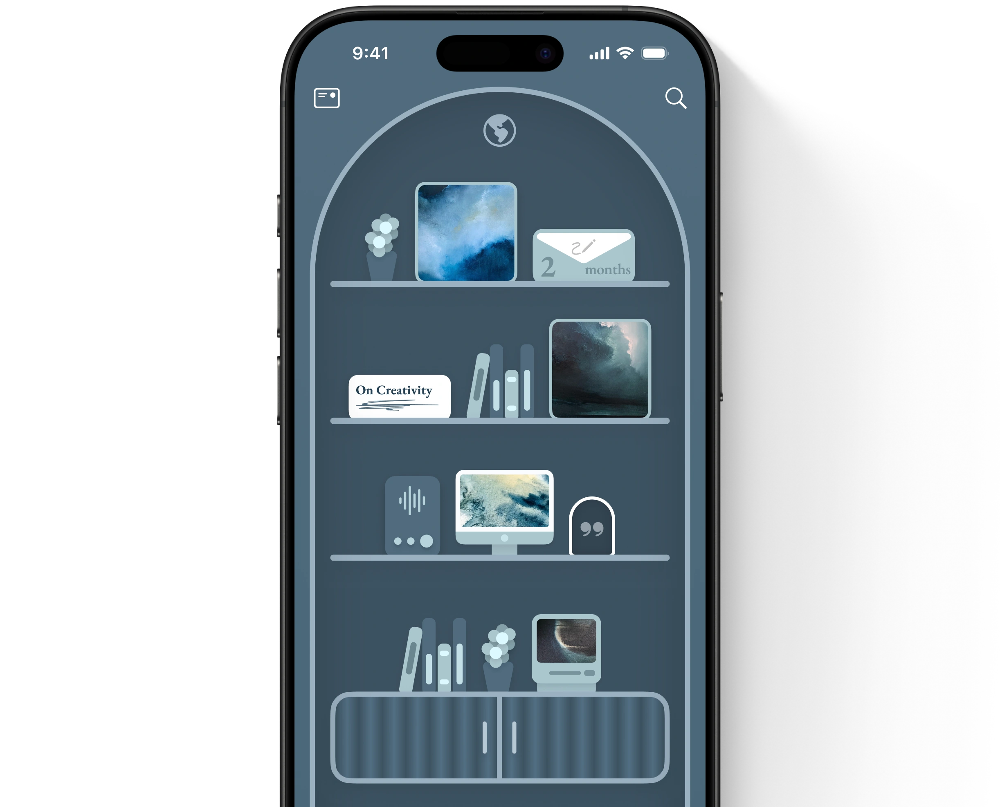
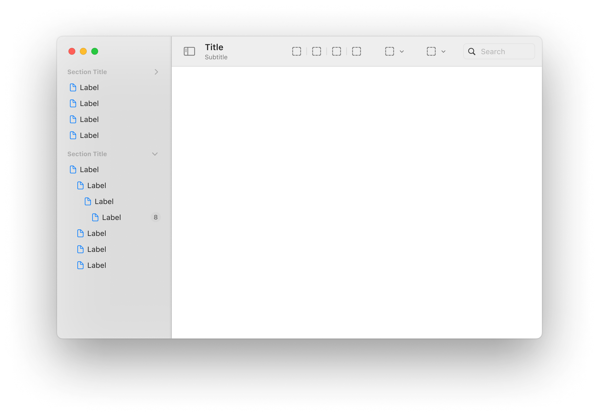

Home
Shelf
In Decision
Human Interface Design
Chance Castaneda
Shelf
Your Life. Shelved Beautifully.
Learn more

In Decision
The power to find clarity.
Learn more

Clarity, focus, care.
Think Far, Stay Foolish.
Think Far, Stay Foolish.
Think Far, Stay Foolish.
Think Far, Stay Foolish.
A Guiding Ethos for the Next 100 Years
Learn more
What is Design?
Essential Principles
Learn more
Who Am I?
Start with my heroes.
Dieter Rams
Steve Jobs
Jony Ive
Camille Paglia
Audio
Sounds of my life.
Gallery
My interests in photos.
New York, NY
San Fransisco, CA
Austin, TX
Mendoza, Argentina
Grand Tetons, WY